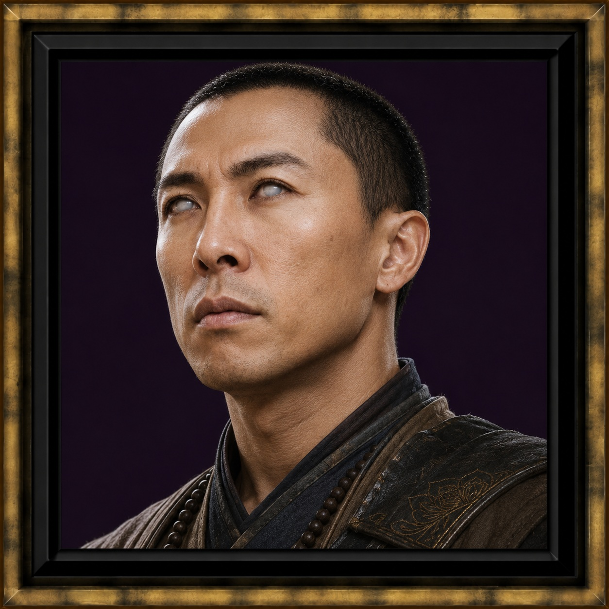

Zhao Mao
The Spice Boys · Discovery Report pending
Zhao Mao is one of The Spice Boys.
The Spice Boys Mortal Ascension PendingOverview
Zhao Mao is a founding member of The Spice Boys — the company that walked Descent into Avernus and continued into Mortal Ascension.
Portrait is on the shelf. Full discovery is not written yet.
Placeholder
This page holds Zhao's place beside the rest of the company until Atlas finishes a proper Character Discovery Report. Incomplete is honest.
This page holds Zhao's place beside the rest of the company until Atlas finishes a proper Character Discovery Report. Incomplete is honest.
Atlas Discovery Status
Portrait: Present
Discovery Report: Pending — dossier not yet complete
Campaign: The Spice Boys (Mortal Ascension): Descent into Avernus
Discovery Report: Pending — dossier not yet complete
Campaign: The Spice Boys (Mortal Ascension): Descent into Avernus